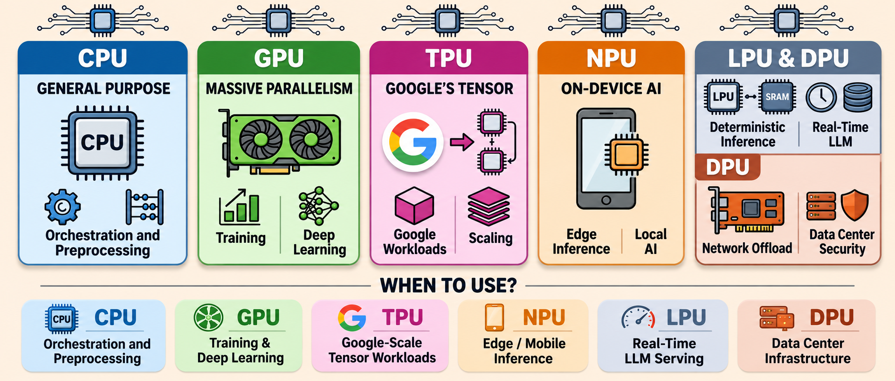

The 6 AI-Chips :
CPU vs GPU vs TPU vs NPU vs LPU vs DPU
One AI application can involve several kinds of processors. Understand what each one does, follow its workflow, and see why different architectures fit different kinds of work.

Six names, several different jobs
Imagine a speech assistant receiving your question. Something must run the application, prepare the sound, execute a neural network, and deliver a response. In a cloud service, traffic must also be routed, protected, and monitored. Those are different kinds of work, so hardware designers optimize for different goals.
The CPU handles flexible application logic; the GPU executes highly parallel numerical work; Google’s TPU specializes in tensor workloads; an NPU accelerates neural processing, often inside a personal device; a Groq-style LPU targets supported inference execution; and a DPU handles infrastructure services.
CPU and GPU describe broad processor families. TPU and LPU are vendor-specific names here. NPU and DPU cover implementations that vary by vendor. A single package can contain a CPU, GPU, and NPU, while a DPU can itself contain CPU cores. “Manufacturer” below identifies the designer or product vendor, rather than the fabrication foundry.
The infographic captures common roles, not exclusive capabilities: CPUs can run models, GPUs also perform inference, and TPUs serve workloads beyond Google’s own internal applications. “Deterministic” in the LPU panel refers to hardware execution; it does not promise identical generated answers or fixed API response times.
Three ideas that make this easier
Training changes a model; inference uses it
Training adjusts learned weights using examples and an optimization process. Inference uses those weights to classify an image, transcribe speech, or generate text. The same hardware family can support both, with different degrees of suitability.
Neural networks repeat arithmetic
A weighted sum might be y = x0*w0 + x1*w1 + x2*w2. Neural-network layers repeat related multiply-and-add operations across many inputs and outputs. Matrices organize values into rows and columns; tensors generalize arrays to more dimensions. Doing many operations together and reusing data efficiently are central hardware design goals.
Speed has more than one meaning
Latency is how long one request waits. Throughput is how much total work finishes per second. Batching can improve throughput while increasing an individual request’s wait. Energy per completed task, response quality, and sustained utilization matter too.
01 / The flexible coordinator
CPUCentral Processing Unit
A CPU runs the operating system and the instructions that hold an application together. Modern x86 CPUs fetch and decode instructions, predict branches, and execute operations across multiple cores. Their strength is handling changing instructions and decisions efficiently.
In AI, a CPU can receive requests, tokenize text, prepare batches, launch accelerator work, and format results. It can also execute the neural network itself. Vector instructions and, on some processors, matrix engines accelerate numerical work. A CPU is much more than a data feeder.
Workflow: how the work moves
- Receive and decideAccept a request and execute application control logic.
- Prepare the inputParse text or images and create model input tensors.
- Execute or dispatchRun inference using CPU libraries, or submit supported work to an accelerator.
- Finish the requestProcess model results and return a response.
A document classifier handles one short paragraph at a time. The CPU cleans the input, runs a small model, and returns a label. For a small enough workload, avoiding accelerator setup and transfers can matter more than peak arithmetic speed.
Pros
- Handles general application code and complex branches.
- Mature compilers, debugging tools, and deployment environments.
- Useful for small batches and mixed application logic.
Cons & constraints
- Usually lower throughput than a well-utilized accelerator on large dense tensor workloads.
- More threads can compete for bandwidth and shared resources.
- Cannot remove bottlenecks inside a separate accelerator.
Best for
Application control, preprocessing, traditional ML, smaller neural models, and workloads where flexibility or low setup overhead matters.
Manufacturers & example devices
Intel and AMD design widely used x86 CPUs. Arm-based CPUs also appear in AI systems; x86 is one architecture, not the definition of a CPU.
Intel Xeon 6 P-core server processors illustrate CPU execution with Intel AMX acceleration. AMD Ryzen AI 9 HX 370 illustrates an x86 processor that contains CPU cores alongside separate GPU and NPU blocks.
Primary documentation: Intel Xeon 6 product brief.
02 / Parallel numerical throughput
GPUGraphics Processing Unit
A GPU runs large numbers of lightweight threads across many processing units. Threads are grouped and scheduled together, making it effective when many values need similar operations. Modern AI GPUs also contain specialized matrix hardware, such as NVIDIA Tensor Cores or AMD matrix cores.
Neural networks repeatedly multiply matrices and apply elementwise operations. GPUs exploit this parallel work during both training and inference. Training additionally computes gradients and updates weights. During inference, the balance between arithmetic, data movement, and scheduling depends on the model and batch size.
Workflow: how the work moves
- Prepare and launchThe host application prepares tensors and launches GPU kernels.
- Distribute workThread groups process different tiles or elements of the tensors.
- Compute layersVector and matrix units perform supported mathematical operations.
- Continue or returnKeep intermediate results on the device and produce outputs or the next training step.
To train an image classifier, the GPU processes a batch of images, computes prediction errors, and calculates gradients for weight updates. Serving the trained classifier later uses a forward pass without that training update.
Pros
- Strong throughput for parallel tensor math, training, and inference.
- Broad framework support and mature numerical libraries.
- Also useful for graphics, simulation, and scientific computation.
Cons & constraints
- Small or irregular tasks may underuse the hardware.
- Divergent branches, synchronization, and transfers can limit speed.
- Large installations require power, cooling, and scheduling infrastructure.
Best for
Large neural-network training, high-throughput inference, parallel numerical work, and applications needing a flexible accelerator ecosystem.
Manufacturers & example devices
NVIDIA and AMD are major AI GPU designers. Intel also makes GPUs. Framework and numerical-format support depend on the particular device and software stack.
NVIDIA H100 is a data-center Tensor Core GPU. AMD Instinct MI300X is a data-center GPU accelerator for AI and HPC. These are accelerator examples, rather than standalone computers.
Primary documentation: AMD Instinct MI300X overview.
03 / Google’s purpose-built tensor accelerator
TPUTensor Processing Unit
TPU here means Google’s Tensor Processing Unit family. These application-specific accelerators are designed for neural-network computation. A key component is a matrix multiplication unit using a systolic array: values flow through a grid of multiply-and-accumulate cells, reusing data as partial sums are computed.
A compiler maps supported model operations onto TPU resources. Other units handle operations outside the main matrix array. Model operations, tensor shapes, compiler support, and distributed communication all affect actual efficiency.
Workflow: how the work moves
- Describe the modelA supported framework expresses operations on tensors.
- Compile and placeThe software stack compiles operations and assigns TPU resources.
- Stream matrix tilesThe array reuses flowing values for many multiply-accumulate operations.
- Combine and scaleOther units finish layers; connected TPU chips cooperate for distributed models.
For a layer Y = X × W, the TPU schedules tiles of X and W through its matrix array and accumulates partial results. A complete model also requires non-matrix operations and, when distributed, communication between chips.
Pros
- Specialized execution for supported tensor-heavy workloads.
- Integrated compiler and cloud tools for distributed work.
- Interconnects allow multiple TPU chips to cooperate.
Cons & constraints
- Models and shapes must fit the supported compilation path.
- Padding, recompilation, and communication can reduce efficiency.
- Cloud TPU access depends on Google’s ecosystem and available configurations.
Best for
Supported large-scale tensor workloads where the model and compiler match the platform. Training and inference suitability vary by generation and configuration.
Manufacturers & example devices
Google designs TPUs. A GPU’s tensor cores are not Google TPUs; similar mathematical operations do not make the product names equivalent.
Cloud TPU v5e, Trillium (v6e), and Ironwood (TPU7x) are concrete Google accelerator generations, accessed through Cloud TPU configurations rather than ordinary consumer graphics cards.
Primary documentation: Google Cloud TPU architecture.
04 / Efficient neural processing close to the user
NPUNeural Processing Unit
An NPU is a block specialized for neural-network operations. Many consumer NPUs are integrated into a phone or PC system-on-chip alongside CPU and GPU blocks. The name is broad: architectures differ by vendor, and NPUs are not universally restricted to mobile devices.
For the on-device role in the infographic, the goal is useful inference within a tight power and thermal budget. A runtime compiles or partitions supported operations for the NPU. Unsupported operations may fall back to another processor or prevent deployment. Lower-precision representations can improve efficiency when the model and hardware support them.
Workflow: how the work moves
- Capture inputThe device receives camera frames, audio, or other application data.
- Prepare a supported modelTools convert, compile, and possibly quantize the neural network.
- Execute neural workThe runtime runs supported layers on the NPU.
- Use the resultThe application receives a transcript, classification, or enhanced image.
A laptop applies a neural background effect to camera frames. The CPU manages the application while a supported model runs on the NPU. Keeping that computation local can avoid uploading those frames, but the rest of the application may still use cloud services.
Pros
- Designed for useful neural inference within constrained power budgets.
- Local execution can reduce network dependence and keep inputs on the device.
- Can leave CPU and GPU resources available for other work.
Cons & constraints
- Operators, numerical formats, model limits, and drivers differ across vendors.
- Conversion and quantization may require accuracy validation.
- An NPU cannot automatically run any large or unsupported model.
Best for
Supported on-device camera, speech, audio, vision, and smaller generative workloads that benefit from efficient local inference.
Manufacturers & example devices
Examples include Qualcomm Hexagon, Intel AI Boost, AMD XDNA, and Apple Neural Engine. These are different implementations of the broad NPU concept.
Qualcomm Snapdragon X Elite includes Hexagon. Supported Intel Core Ultra processors include Intel AI Boost. AMD Ryzen AI 9 HX 370 includes an XDNA 2 NPU. These are integrated blocks inside larger processors, rather than separate retail expansion cards.
Primary documentation: Qualcomm Hexagon NPU overview.
05 / A specialized path for responsive inference
LPULanguage Processing Unit
LPU here refers to Groq’s Language Processing Unit architecture and related licensed implementations. This is a vendor-specific term rather than a universal category with one standard feature set. Its focus is responsive, predictable execution of supported inference workloads.
Groq’s design emphasizes compiler-planned computation, coordinated data movement, and on-chip SRAM. The compiler determines a tightly scheduled execution plan. Limited on-chip capacity makes model placement and multi-chip communication important. Hardware execution predictability does not guarantee fixed end-to-end service latency or identical generated text.
Workflow: how the work moves
- Compile supported workMap model operations and data placement to the target.
- Coordinate executionSchedule computation and transfers through a planned dataflow.
- Execute inference stagesCompute supported model portions, potentially across multiple chips.
- Continue decodingFeed results into subsequent generation steps and stream tokens through the serving system.
A language service predicts tokens repeatedly. Reducing time between tokens improves responsiveness. NVIDIA’s Groq 3 LPX design combines LPU execution of latency-sensitive feed-forward and expert work with Rubin GPUs handling prefill and decode attention. It is a cooperative system, not a claim that LPUs replace every GPU operation.
Pros
- Targets predictable execution and responsive supported inference.
- High-bandwidth on-chip SRAM reduces some external data movement.
- A specialized serving path can complement GPU execution.
Cons & constraints
- Model support and compiler mapping constrain efficient execution.
- SRAM capacity and cross-chip partitioning influence system design.
- Token speed alone does not describe overall latency, quality, or cost.
Best for
Supported latency-sensitive language-model serving stages where token responsiveness matters. This inference focus differs from general-purpose model training.
Manufacturers & example devices
Groq originated this LPU architecture. NVIDIA uses Groq and LPU technology under license; the system role and architecture depend on generation.
Groq LPU-based hardware and NVIDIA Groq 3 LPU accelerators are examples. NVIDIA Groq 3 LPX is a rack-scale system containing LPUs, not one chip. GroqCloud is an inference service, not a physical device.
Primary documentation: NVIDIA Groq 3 LPX technical overview.
06 / Infrastructure around the AI workload
DPUData Processing Unit
A DPU is a programmable infrastructure processor combining networking interfaces, processor cores, and specialized engines for data-center services. It moves, protects, and manages data while separating supported infrastructure work from application compute.
AI servers spend effort on networking, storage access, encryption, and virtualization as well as neural-network execution. A DPU can offload supported parts of those services. Its role is generally infrastructure acceleration, rather than replacing the matrix computation performed by a GPU or TPU.
Workflow: how the work moves
- Receive trafficNetwork or storage traffic reaches the DPU-equipped system.
- Apply policySoftware and programmable engines handle supported steering and isolation rules.
- Perform offloadsRun supported network, encryption, or storage services.
- Deliver and observeDeliver data through the configured path and collect service telemetry.
An inference server receives encrypted requests and accesses network storage. A configured DPU can offload supported network, storage, and security work, freeing host CPU capacity. The model still executes on its selected compute device.
Pros
- Can free host CPU resources from supported infrastructure services.
- Programmable paths support traffic management and observability.
- A separate execution domain can help isolate infrastructure work.
Cons & constraints
- Benefits depend on actual offload support and integration.
- Adds software, firmware, policy, and operational responsibilities.
- Does not automatically accelerate model arithmetic or every transfer.
Best for
AI data centers, cloud infrastructure, secure multitenant servers, and systems with substantial networking, storage, or virtualization overhead.
Manufacturers & example devices
NVIDIA BlueField and AMD Pensando are prominent families. A DPU may contain Arm CPU cores, illustrating why these six roles are not mutually exclusive ingredients.
NVIDIA BlueField-3 is a concrete DPU example. AMD Pensando Salina is another, targeting software-defined networking, security, storage offloads, and telemetry in cloud and AI infrastructure.
Primary documentation: NVIDIA BlueField DPU platform.
How they work together
A local camera application
The CPU manages application logic and prepares camera input. A supported NPU model performs an enhancement or classification efficiently. The GPU can render the interface and composite the output. This arrangement can exist within one processor package.
A cloud language-model service
- The CPU validates requests, prepares tokens, and schedules work.
- GPUs, supported TPUs, or an LPU-based system execute model computation. These are possible execution paths, not mandatory steps in one serial pipeline.
- Some systems split stages across different accelerators. NVIDIA’s Groq 3 LPX design combines LPUs and GPUs in this way.
- A DPU can handle supported network, storage, and security services around the server.
- The CPU application packages and streams the generated result.
Training is a separate workflow: data is prepared, predictions and gradients are computed, and an optimizer updates weights. GPUs and supported TPU configurations are common choices for large training jobs. Ordinary serving does not require retraining the model for every prompt.
Compare the workload, not the acronym
Architecture claims become useful when the same application conditions are compared. These are engineering tradeoffs, rather than a product ranking.
- Model and operator support. Can the runtime execute the whole model? Falling back to another processor can change speed and power consumption.
- Precision and quality. INT8, BF16, FP16, and FP8 are numerical formats. Validate the output quality of the actual model and format used.
- Computation versus movement. Arithmetic units need a steady supply of data. Capacity, bandwidth, communication, and synchronization can become the bottleneck.
- Batch size and concurrency. One interactive user and thousands of batched requests stress the hardware differently.
- End-to-end timing. Include input preparation, transfers, execution, and output handling. Account for compilation where relevant. For LLM serving, distinguish time to first token from the time between subsequent tokens.
- Energy and utilization. Peak TOPS or FLOPS is not application performance. Compare the same model, quality target, precision, workload, and system boundary.
A DPU may reduce infrastructure overhead, a GPU may accelerate tensor computation, and an NPU may enable efficient local inference. Each benefit depends on the model, software, and surrounding system.
A small technical glossary
- SoC — system-on-chip
- A chip integrating multiple functions, potentially including CPU cores, graphics, an NPU, and controllers.
- MAC — multiply-accumulate
- Multiply values and add the result to an accumulated sum: a common neural-network building block.
- Systolic array
- A grid of processing cells passing values through a regular pattern while computing operations such as matrix multiplication.
- Quantization
- Representing some model values with a lower-precision format. Efficiency gains depend on hardware support and acceptable quality.
- Compiler and runtime
- The compiler transforms a model or program for a target. The runtime loads, schedules, and executes supported work.
- SRAM
- A fast memory technology often used on-chip. Its limited capacity is an important tradeoff in SRAM-focused accelerators.
- Prefill and decode
- In an autoregressive language model, prefill processes the input context; decode generates subsequent tokens step by step.
- Offload
- Moving supported work to a specialized processor or engine. Compatible software and integration are still required.
Sources & further reading
Examples illustrate hardware families; they are not a list of the newest or fastest products. Terminology and supported models evolve. Sources checked on 24 November 2026.
- Intel Xeon 6 product brief — CPU features and integrated AI acceleration.
- NVIDIA H100 and AMD Instinct MI300X — AI GPU examples.
- Google Cloud TPU architecture and TPU7x documentation — matrix arrays and TPU generations.
- Qualcomm Hexagon, Intel AI Boost, and AMD Ryzen AI 9 HX 370 specifications — integrated NPU examples.
- Groq: What is an LPU? — original architecture explanation. Its performance comparisons are vendor claims.
- Inside NVIDIA Groq 3 LPX — the combined GPU/LPU serving design.
- NVIDIA BlueField and AMD Pensando — DPU roles and families.